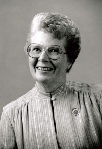

Frances Spence, foi uma das "mulheres do ENIAC", como ficou conhecido o grupo de mulheres que fizeram a programação do ENIAC. Nasceu na Filadélfia, em 1922.
Estudou no Colégio de Chestnut Hill, onde se graduou com foco em matemática e adicionalmente em física, o que a levou a trabalhar no ENIAC, computador militar americano para calcular trajetórias de misseis balísticos.
Durante a época, as mulheres que trabalharam no ENIAC acabaram não recebendo o devido crédito, recebendo notícias de pouca importância nos jornais e não sendo mencionadas na revelação do ENIAC ao público.
Em 1997, Spence foi colocada no Hall da Fama da "Women in Technology", assim como as outras mulheres que trabalharam no ENIAC.
